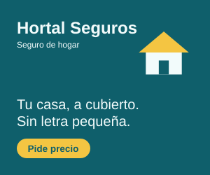
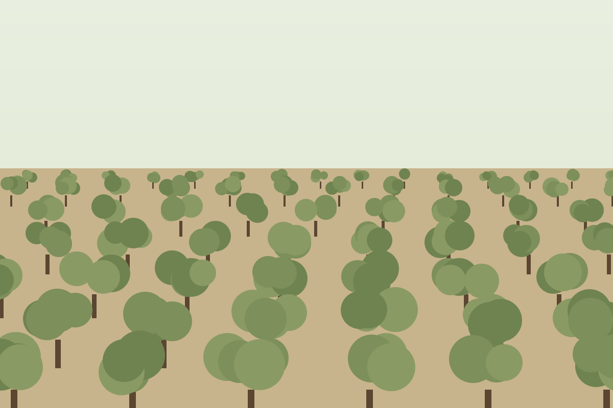
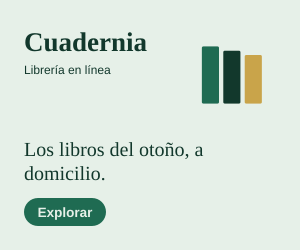

Reportaje Medio ambiente · Sequía
El verano en que el Alcor dejó de llegar al mar
El embalse de La Serrata cierra el año hidrológico al 21 % de su capacidad, el nivel más bajo desde que hay registros. En los pueblos de la cuenca, la sequía ya no es una previsión: es el horario del grifo, el olivar sin riego y una línea blanca en la roca que marca hasta dónde llegaba el agua.
Edición para mecenas
Escucha este artículo
Calculando duración…
Lo lee la voz en español de tu navegador o de tu móvil. Puedes seguir el texto mientras escuchas.
Resumen en lectura fácil
Este verano casi no ha llovido cerca del río Alcor.
El embalse de La Serrata guarda agua para muchos pueblos. Ahora tiene muy poca agua. De cada 100 litros que le caben, solo tiene 21.
En cinco pueblos cortan el agua del grifo por la noche.
Los agricultores casi no pueden regar los olivos. Habrá menos aceite.
Los expertos piden gastar menos agua. También piden cambiar algunos cultivos.
El 20 de octubre las autoridades deciden si hay emergencia por falta de agua.
Las claves
- La Serrata está al 21 % de su capacidad, el peor dato en cuarenta años de registros.
- Cinco municipios cortan el agua de 23:00 a 7:00 desde el 12 de agosto.
- El riego del olivar se ha reducido un 70 % y la cooperativa calcula media cosecha.
- La CHA decide el 20 de octubre si declara la emergencia hidrológica en toda la cuenca.
La línea blanca
Desde el mirador de la presa, el embalse de La Serrata parece un plato que alguien ha dejado a medio fregar. El agua, de un verde opaco, ocupa el fondo del valle; por encima, la roca está pintada de una franja blanca de casi treinta metros. Es la cal que el agua deja al retirarse, y en Valdeoliva la llaman simplemente la línea
. Marca el nivel de 2019, el último año en que el embalse se llenó.
En agosto asomó la torre de la iglesia de San Bartolomé, el pueblo que el pantano sumergió en 1963. Llegaron curiosos de toda la provincia a hacerse fotos. A finales de septiembre ya se podía bajar andando hasta la puerta del atrio. La gente viene a ver la torre como si fuera una atracción
, dice Rosa Llamas, alcaldesa de Valdeoliva desde hace once años. Para nosotros es un termómetro.
Mi abuela bajaba a ver la torre cuando había sequía. Decía que el pueblo salía a respirar. Este año ha salido entero.
La Serrata abastece a 38 municipios y a unas 210.000 personas, además de a la mayor parte del regadío de la vega. El 30 de septiembre, último día del año hidrológico, guardaba 87 hectómetros cúbicos de los 412 que admite. Es el 21 %, frente al 49 % de media de la última década.
Publicidad Ver menos anuncios

Grifos con horario
En el bar de la plaza de Valdeoliva hay un cartel escrito a mano junto a la cafetera: Último café, 22:45
. A las once de la noche se corta el agua en todo el municipio y no vuelve hasta las siete de la mañana. Lo mismo ocurre en Fuenteseca, Almoral, Cerrillo y Los Hoyos desde el 12 de agosto.
Javier Montes, el dueño del bar, ha llenado cuatro garrafas de veinticinco litros que guarda debajo de la barra. No es por el negocio, es por los mayores
, explica. Muchos vecinos superan los ochenta años y viven solos. Protección Civil reparte cada tarde agua embotellada a quien lo pide, y el ayuntamiento ha instalado dos depósitos en la plaza para emergencias.
El consumo doméstico ha bajado un 23 % desde que empezaron las restricciones, según los datos de la empresa municipal. Pero el agua de los grifos es una parte pequeña del problema: en la cuenca del Alcor, el regadío se lleva cuatro de cada cinco litros.
El olivar, a media ración
Andrés Peral tiene sesenta hectáreas de olivar a las afueras de Almoral. Hasta 2022 regaba por goteo de mayo a septiembre. Este año ha recibido el 30 % del agua que le correspondía, y la ha repartido en tres riegos de supervivencia. No riego para cosechar, riego para que no se me mueran los árboles
, resume mientras pasa la mano por una rama con aceitunas del tamaño de un garbanzo.

La cooperativa del Alcor, que agrupa a 1.400 socios, calcula que la próxima campaña dará la mitad de aceite que una normal. El precio en el supermercado todavía no lo refleja porque quedan existencias de la cosecha anterior, que fue excelente. El golpe llegará en primavera
, avisa su gerente, Pilar Andújar.
Peral no culpa a nadie en concreto. Habla de los años, de que el otoño llega tarde y la primavera se ha vuelto corta. Su hijo, ingeniero agrónomo, le insiste en arrancar una parte del olivar intensivo y probar con almendro de secano. Me cuesta, porque esos árboles los planté yo
, admite. Pero los números no salen.
Lo que viene
Inés Cobo, hidróloga del Instituto Regional del Agua, lleva quince años midiendo el Alcor. Explica que lo preocupante no es un verano seco, sino la secuencia: cuatro años seguidos por debajo de la media han vaciado también los acuíferos que alimentan el río en los meses sin lluvia. El río ya no tiene de dónde tirar
, dice. Por primera vez desde que hay registros, el Alcor no ha llegado a su desembocadura durante 46 días.
Cobo distingue entre lo urgente y lo necesario. Lo urgente es asegurar el abastecimiento de este invierno: interconectar La Serrata con el embalse vecino de Peñalba, que está al 44 %, y reparar las fugas de la red, que en algunos pueblos pierde un tercio del agua. Lo necesario, insiste, es adaptar la cuenca: decidir qué se cultiva, cuánto y dónde, sabiendo que la lluvia media de los próximos veinte años será menor que la de los veinte anteriores.
¿Qué supone declarar la emergencia hidrológica?
Permite a la Confederación reducir las concesiones de riego por debajo de lo pactado, priorizar el consumo humano y tramitar obras urgentes sin los plazos ordinarios. También abre la puerta a ayudas para los agricultores afectados. Se revisa cada tres meses.
- La CHA declara la alerta en la cuenca del Alcor.
- El riego del olivar se limita al 30 % de la dotación.
- Empiezan los cortes nocturnos en cinco municipios.
- La Serrata cierra el año al 21 %.
- Reunión para decidir la emergencia hidrológica.
Publicidad Ver menos anuncios

La Confederación tiene previsto reunir el 20 de octubre a su comisión de desembalse. Sobre la mesa estarán la declaración de emergencia y un recorte adicional del riego para la campaña de invierno. Los regantes ya han anunciado que pedirán compensaciones.
Al caer la tarde, Rosa Llamas vuelve al mirador. Desde allí se ve la torre de San Bartolomé, entera, con su sombra larga sobre el barro seco. Ojalá el año que viene no se vea
, dice. Luego mira la hora: quedan tres horas para que se corte el agua.